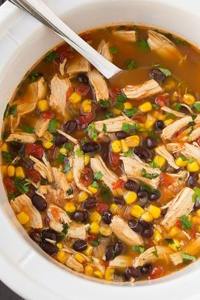

92 ideas de Comidas rápidas, deliciosas y novedosas... | comida, comida rapida, recetas para cocinar

Comidas rápidas, deliciosas y novedosas
Collection by Monenito Ramírez
92 Pins • 51 Followers 1:44 Italian Recipes Beef Recipes Cooking Recipes Healthy Recipes Lasagna Recipes Tasty Lasagna Cooking Lasagna Cooking Tips Easy RecipesLasagna Party Ring Recipe by Tasty
· 212 reviews ·Here's what you need: lasagna noodles, canola oil, onion, garlic, 80% lean ground beef, ground sweet italian sausage, salt, black pepper, crushed tomato, ricotta cheese, shredded parmesan cheese, fresh basil, egg, shredded mozzarella cheese, marinara sauce, nonstick cooking spray
2:58 I Love Food Good Food Yummy Food Grilled Cheese Recipes Grilled Cheeses Grill Cheese Sandwich Recipes Snacks Diy Food Food Videos5 Grilled Cheese Recipes
Grilled Cheese 5 Ways. The last one would make a great Fall weeknight dinner.
Slow Cooker Italian Beef Crock Pot Slow Cooker Crock Pot Cooking Slow Cooker Recipes Cooking Recipes Italian Recipes Crockpot Italian Roast Beef Italian Beef Seasoning Recipe Cooking OilSlow Cooker Italian Beef Sandwiches
Load up on the delicious flavor of these Slow Cooker Italian Beef Sandwiches! A handful of ingredients are all you need to pull this amazing dinner off!
Panini Sandwiches Sandwich Bar Soup And Sandwich Wrap Sandwiches Vegetarian Sandwiches Chicken Sandwich Panini Sandwich Recipes Italian Sandwiches Dinner SandwichesSpicy Italian Panini
· 1 review · 15 minutes ·This Spicy Italian Panini recipe is full of spicy meats and cheese in a warm and crusty pressed sandwich.
I Love Food Good Food Yummy Food Italian Dishes Italian Recipes Little Lunch Carlsbad Cravings Instant Recipes 30 Minute MealsStromboli n 35 Minutes with Homemade Pizza Dough!
satisfy your pizza cravings in 35 minutes or less with No Wait No Rise Stromboli AKA rolled up pizza! Step by step tutorial of how to make EASY stromboli. A family favorite instant meal or must have appetizer. #stromboli #pizzadough #30minutemeals
New Recipes Favorite Recipes Healthy Recipes Crockpot Recipes Quick And Easy Recipes Casserole Recipes Baking Recipes Vegetarian Recipes Fudge RecipesCheesy Pepperoni Pizza Sticks
· 27 reviews · 20 minutes ·Just 6 ingredients and the kids will love 'em! Blogger I Wash You Dry prepares these Cheesy Pepperoni Pizza Sticks as a quick and easy after-school snack for her kids.
Cookie Desserts Just Desserts Cookie Recipes Delicious Desserts Dessert Recipes Cookie Favors Cookie Cups Italian Desserts Holiday BakingHow To Make the Best Rugelach Cookies
· 9 reviews ·This decadent cookie starts with a cream cheese-based dough and whatever filling you can dream up. Honey-walnut or chocolate are good places to start!
Grill Sandwich Soup And Sandwich Sandwich Recipes Steak Sandwiches Grilled Cheese Recipes Beef Recipes Cooking Recipes Grilled Cheeses Grilled PolentaBrisket Grilled Cheese
· 1 review · 15 minutes ·Brisket Grilled Cheese - The most delicious way to use up leftover brisket!
Summer Grilling Recipes Healthy Summer Recipes Barbecue Recipes Grilling Ideas For Dinner Recipes For The Grill Vegan Recipes Fast Recipes Best Food To Grill Easy Grill Recipes31 Grilling Recipes for Summer
It's too hot to cook indoors! Fire up that grill and try one of these 31 Grilling Recipes for Summer! Your air conditioning bill will thank you.
Mexican Dishes Mexican Food Recipes Chilean Recipes Colombian Food Colombian Recipes Latin Food Snacks Food And Drink Easy MealsComo preparar la masa para empanadas fritas - Laylita.com
Masa casera de empanadas fritas
Vegan Recipes Cooking Recipes Fish Recipes Love Food Food Porn Food And Drink Healthy Eating Healthy Bites Easy MealsReceta: Lasaña de calabacín, pavo y queso.
Receta ideal para engañarnos con la vista, pero no con el gusto, por que su sabor es realmente bueno! Manera fácil de hacer una lasaña sin hidratos de carbono, baja en calorías y nada complicada de elaborar. Ingredientes 1 calabacín Lonchas de pavo o jamón york. Lonchas de queso bajo en grasa (-40%) Queso rallado bajo en grasa Tomate natural triturado Orégano Preparación Pelar el calabacín y cortar en tiras finas con la ayuda de un cortador o cuchillo. Triturar un tomate natural mediano o…
10 Minute Meals Quick Meals I Love Food Good Food Yummy Food French Bread Pizza Food Porn Food And Drink Cooking Recipes5 cenas rápidas con barras de pan | Pequeocio
Cenas rápidas con barras de pan. Recetas fáciles para la cena usando barras de pan y otros ingredientes que tenemos en la nevera.
Easy Cooking Cooking Recipes Food Porn Brunch Vegetarian Recipes Healthy Recipes Easy Recipes Deli Food Good Food16 Deliciosas recetas de sándwiches tan fáciles que no te lo vas a creer
¿Quién necesita de Subway para comer un sándwich verdaderamente sabroso?
Mexican Chicken Tacos Chicken Taco Recipes Mexican Food Recipes New Recipes Cooking Recipes Healthy Recipes Quick Recipes Easy Chicken Tacos Crockpot Chicken TacosShredded Chicken Tacos
Quick and easy shredded CHICKEN TACOS recipe that makes a simple 30 minute meal, using basic ingredients . These Mexican chicken tacos can be made on the stovetop or slow cooker. {Ad} From cakewhiz.com
Mexican Dishes Mexican Food Recipes Dessert Recipes Masa Recipes Salty Foods Peruvian Recipes Pan Dulce Latin Food BakeryMASA CASERA: para Empanadas de Horno receta fácil para preparar, Si te gusta dinos HOLA y dale a Me Gusta MIREN… | Receitas Soberanas
Ingredientes 3 tazas de harina de trigo ¼ a ½ cucharadita de sal 6 onzas de mantequilla sin sal 1 huevo ¼ a ½ taza de agua o leche, agregue la cantidad necesaria hasta que la masa quede suave Prepa…
Make Ahead Meals Easy Meals Slow Cooker Recipes Cooking Recipes Freezer Recipes Drink Recipes Cooking Tips Homemade Frozen Pizza My Favorite FoodHow to Make Frozen Pizzas (homemade freezer pizza)
Step by step guide to making and freezing homemade frozen pizzas so you can enjoy them later! A freezer meal the whole family will love :)
Privacy